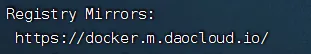

Ubuntu #
采用版本：24.01
安装过程：全部 Done
非Root用户上传文件 #
# 赋予指定用户组用户在某个文件夹及其子文件夹上传文件的权限
sudo chown -R quanta:quanta /DATA
时区设置 #
# 查看当前时区
timedatectl
# 查看东八区全称
timedatectl list-timezones | grep Shanghai
# 设置时区
sudo timedatectl set-timezone Asia/Shanghai
host设置 #
便于多主机内网互相访问
sudo vim /etc/hosts
# 补充相关机器的ip 主机名
192.168.1.11 dataserver1
192.168.1.12 dataserver2
192.168.1.13 dataserver3
OpenSSH安装 #
sudo apt update && sudo apt upgrade
sudo apt install openssh-server
service ssh status
# 随后可以本机SSH使用安装过程设置的账户密码登录服务器
修改监听端口 #
sudo vi /etc/ssh/sshd_config
# 内容
Port 2222
修改后要重启
重启 #
# Ubuntu22版本之前：
sudo systemctl restart sshd
# Ubuntu22版本之后：
sudo systemctl daemon-reload
sudo systemctl restart ssh.socket
Docker安装(指定版本) #
apt依赖安装 #
sudo apt-get install apt-transport-https ca-certificates curl gnupg-agent software-properties-common
添加阿里云docker GPG密钥 #
curl -fsSL http://mirrors.aliyun.com/docker-ce/linux/ubuntu/gpg | sudo apt-key add -
添加阿里云镜像源 #
sudo add-apt-repository "deb [arch=amd64] http://mirrors.aliyun.com/docker-ce/linux/ubuntu $(lsb_release -cs) stable"
#更新
sudo apt-get update
查看有哪些可安装版本 #
sudo apt-cache madison docker-ce
# 列出版本
sudo apt-cache madison docker-ce | awk '{ print $3 }'
第二列是版本号，第三列是存储库的名称
版本号提取： 第二列的第一行字符串为 5:19.03.93-0ubuntu-bionic ，那么版本号为 5:19.03.93-0ubuntu-bionic，版本号字符串必须写全第二列的整个字符串
安装最新版 #
sudo apt-get install -y docker-ce
安装指定版本 #
sudo apt-get install -y docker-ce=5:27.3.1-1~ubuntu.24.04~noble
安装检查(版本查看) #
sudo docker --version
修改镜像源 #
sudo vim /etc/docker/daemon.json
{
"registry-mirrors": [
"https://docker.m.daocloud.io"
]
}
修改后要重启docker
sudo systemctl daemon-reload #重启daemon进程
sudo systemctl restart docker #重启docker
检查修改成功
sudo docker info

限制容器日志大小 #
不限制会直接打到磁盘爆满
sudo vim /etc/docker/daemon.json
{
"registry-mirrors": ["https://docker.m.daocloud.io"],
"log-driver":"json-file",
"log-opts": {"max-size":"10k", "max-file":"3"}
}
# 重启docker
sudo systemctl daemon-reload
sudo systemctl restart docker
Hello World #
sudo docker pull hello-world
sudo docker run hello-world
命令启停 #
sudo systemctl start docker
sudo systemctl stop docker
自动唤醒 #
默认会开启自动唤醒，stop docker进程时会显示：
Stopping 'docker.service', but its triggering units are still active:
docker.socket
docker被访问时会被自动启动
一般不会想关闭，如果要关闭：
sudo systemctl stop docker.socket
开启自启 #
sudo systemctl enable docker
Curl安装 #
sudo apt install curl
DockerCompose安装（指定版本） #
与Docker的版本适配关系 https://docs.docker.com/compose/releases/release-notes/
指定版本安装 #
docker装的是27.3.1 对应compose版本是2.30.x
使用2.30.1
sudo curl -L "https://github.com/docker/compose/releases/download/v2.30.1/docker-compose-linux-x86_64" -o /usr/local/bin/docker-compose
或者自行下载上传后执行：
# 下载：到github docker compose上找所需版本包
https://github.com/docker/compose/releases/download/v2.30.1/docker-compose-linux-x86_64
https://github.com/docker/compose/releases
# 上传后转移目录
sudo cp docker-compose-linux-x86_64 /usr/local/bin/docker-compose
添加Docker Compose执行权限 #
sudo chmod +x /usr/local/bin/docker-compose
安装检查 #
docker-compose --version
Docker卸载 #
完全卸载Docker及安装时自动安装的所有包 #
sudo apt-get autoremove docker docker-ce docker-engine docker.io containerd runc
删除没有删除的相关插件 #
sudo apt-get autoremove docker-ce-*
删除docker的相关配置&目录 #
sudo rm -rf /etc/systemd/system/docker.service.d
sudo rm -rf /var/lib/docker
确认docker卸载完毕（查看版本） #
sudo docker --version
如果还有，可能存在snap版本的，删除
sudo snap remove --purge docker
删除Docker相关文件 #
whereis docker
sudo rm -rf /usr/bin/docker
防火墙UFW控制 #
查看防火墙状态 #
sudo ufw status
查看防火墙状态 包括默认规则 #
sudo ufw status verbose
设置默认拒绝入站流量 #
sudo ufw default deny incoming
设置默认允许出站流量 #
sudo ufw default allow outgoing
防火墙启停 #
sudo ufw enable
sudo ufw disable
允许/禁用端口 #
sudo ufw allow 2222/tcp
sudo ufw deny 22/tcp
删除规则 #
sudo ufw delete allow 6379/tcp
防火墙开机自启 #
sudo systemctl status ufw
ifconfig使用安装 #
sudo apt install net-tools
扩容磁盘（分区扩展+提升逻辑卷大小和根目录空间） #
# 操作之前先停止各个docker容器等程序
sudo docker-compose stop container_name
# 持续重启的容器可能无法接收停止命令 使用down强制停止
sudo docker-compose down container_name
# 进入 fdisk 程序
sudo fdisk /dev/sda
# 输入 d 表示要删除分区
Command (m for help): d
# 输入 3 表示要删除的是 /dev/sda3
Partition number (1-3, default 3): 3
# 显示已删除
Partition 3 has been deleted.
# 输入 n 表示创建新分区
Command (m for help): n
# 直接回车表示选择分区号为默认3
Partition number (3-128, default 3):
# 直接回车默认起始扇区
First sector (4198400-1430257630, default 4198400):
# 直接回车默认结束扇区为使用所有剩余空间
Last sector, +/-sectors or +/-size{K,M,G,T,P} (4198400-1430257630, default 1430255615):
Created a new partition 3 of type 'Linux filesystem' and of size 680 GiB.
Partition #3 contains a LVM2_member signature.
# yes 表示删除原本的GPT/MBR签名 会导致分区信息丢失
# no 表示保留旧签名 只是对磁盘进行小调整 比如扩展
Do you want to remove the signature? [Y]es/[N]o: n
# w 保存修改
Command (m for help): w
The partition table has been altered.
Syncing disks.
# 重新加载分区表
sudo partprobe
# 扩展 LVM物理卷
sudo pvresize /dev/sda3
# 扩展逻辑卷
sudo lvextend -l +100%FREE /dev/mapper/ubuntu--vg-ubuntu--lv
# 调整文件系统大小
sudo resize2fs /dev/mapper/ubuntu--vg-ubuntu--lv
# 查看当前的文件占用情况
sudo fdisk -l
Disk /dev/sda: 682 GiB, 732291923968 bytes, 1430257664 sectors
Disk model: Virtual disk
Units: sectors of 1 * 512 = 512 bytes
Sector size (logical/physical): 512 bytes / 512 bytes
I/O size (minimum/optimal): 512 bytes / 512 bytes
Disklabel type: gpt
Disk identifier: 0493D914-0713-4A60-93B8-B83236128F4C
Device Start End Sectors Size Type
/dev/sda1 2048 4095 2048 1M BIOS boot
/dev/sda2 4096 4198399 4194304 2G Linux filesystem
/dev/sda3 4198400 1430255615 1426057216 680G Linux filesystem
Disk /dev/mapper/ubuntu--vg-ubuntu--lv: 680 GiB, 730140246016 bytes, 1426055168 sectors
Units: sectors of 1 * 512 = 512 bytes
Sector size (logical/physical): 512 bytes / 512 bytes
I/O size (minimum/optimal): 512 bytes / 512 bytes
# 已经给/dev/sda3和/dev/mapper/ubuntu--vg-ubuntu--lv扩展到了680G
df -h
Filesystem Size Used Avail Use% Mounted on
tmpfs 1.2G 114M 1.1G 10% /run
/dev/mapper/ubuntu--vg-ubuntu--lv 669G 11G 631G 2% /
tmpfs 5.9G 0 5.9G 0% /dev/shm
tmpfs 5.0M 0 5.0M 0% /run/lock
/dev/sda2 2.0G 95M 1.7G 6% /boot
tmpfs 1.2G 12K 1.2G 1% /run/user/1000
# 根目录可用空间已经扩展到了669G
切换用户和修改密码 #
# 切换用户
su user
# 修改密码
passwd user
# 修改root用户密码
sudo passwd root
固定本机内网IP 禁用DHCP #
# 编辑netplan配置文件
sudo vim /etc/netplan/50-cloud-init.yaml
# 内容如下 注释了原本的配置
# This file is generated from information provided by the datasource. Changes
# to it will not persist across an instance reboot. To disable cloud-init's
# network configuration capabilities, write a file
# /etc/cloud/cloud.cfg.d/99-disable-network-config.cfg with the following:
# network: {config: disabled}
#network:
# ethernets:
# ens192:
# dhcp4: true
# version: 2
network:
ethernets:
# ens192名称和原始配置保持一致
ens192:
dhcp4: false
addresses: [192.168.1.11/24] # 需要的本机ip
routes:
- to: default
via: 192.168.1.1 # 网关地址
nameservers:
addresses: [192.168.1.1] # DNS地址
version: 2
# 使得配置生效
sudo netplan apply